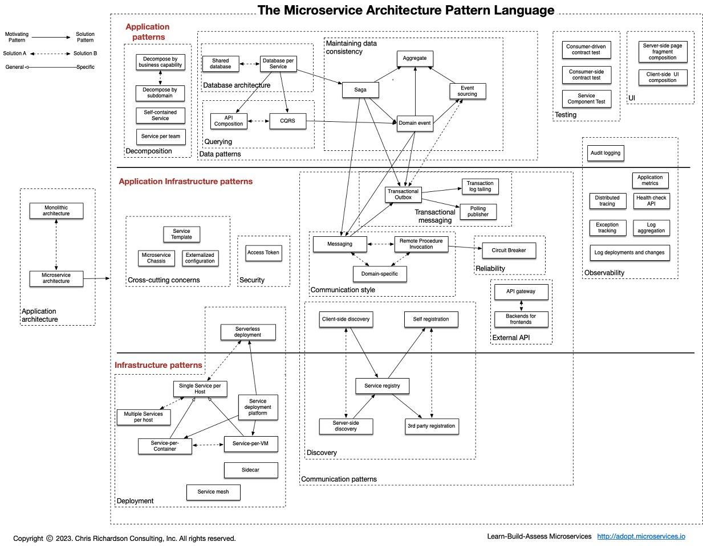

目录 #
微服务 定义 #
In short, the microservice architectural style [1] is an approach to developing a single application as a suite of small services, each running in its own process and communicating with lightweight mechanisms, often an HTTP resource API. These services are built around business capabilities and independently deployable by fully automated deployment machinery. There is a bare minimum of centralized management of these services, which may be written in different programming languages and use different data storage technologies. – [Martin Fowler]
Core #
API网关 #
服务容错 #
服务注册和发现 #
服务间调用 #
Micro Service Architecture Microservice 微服务的理论模型和现实路径
服务契约 #
- API，具体接口的 API 接入技术说明。
- 能力，服务能力的描述。
- 契约，提供这些能力所约定的一些限制条件说明。
- 版本，支持的最新和历史的版本说明。
调用协议 #
-
同步 HTTP REST（JAX-RS） RPC（Dubbo）
-
异步消息 Kafka, RabbitMQ, Notify AMQP, MQTT, STOMP

服务部署和发布 #
- 部署模式
- Single Service per Host
- Multiple Services per Host patterns
Design #
服务划分和组合 #
微服务不是指"微小"的服务, 而是如何"拆分"服务,然后"组合"服务.
- DDD 领域驱动设计, 上下文划分（context）
- 康威定律
服务分层 #
上层: 聚合服务（适配服务， 边界服务） #
比如：pc和mobile服务对商品服务返回内容的裁剪。
聚合商品服务和目录服务的内容。
下层: 基础服务（核心领域服务， 公共服务） #
比如：电商的商品服务， 目录服务， 订单服务
Design-微服务设计模式 #
Overview #

Sidecar [11] #
分离业务逻辑与路由，流控，熔断，幂等，服务发现，鉴权等控制组件。
适用场景： 老系统改造扩展，Sidebar 进程与服务进程部署在同一个节点； 多语言混合分布式系统扩展；
Eg. k8s pod中日志采集sidecar
The Scale Cube 可伸缩性 #
X-Axis: Horizontal Duplication and Cloning of services and data Y-Axis: Functional Decomposition and Segmentation - Microservices (or micro-services) Z-Axis: Service and Data Partitioning along Customer Boundaries - Shards/Pods
X-Axis: Replicate && Load Balance Y-Axis: Servcie Z-Axis: Data Sharding
微服务的优势和代价 #
MicroservicePremium Martin Fowler.
 生产率和复杂度之间的关系。
生产率和复杂度之间的关系。
在不复杂的系统中， 更适合monolithic的应用。 复杂度增长时， 微服务的生产率能持续保持，在生产率方面是可伸缩的。
原则和缺点（挑战） #
微服务架构——不是免费的午餐 有关微服务架构的争论：更简单还是更复杂？
| 原则 | 优点 | 缺点 | 挑战 |
|---|---|---|---|
| 分布式服务组成的系统； 去中心化 | 可用性高 | 多服务运维难度 | 分布式系统的复杂性（容错，延迟，分布式事务） |
| 按照业务而不是技术来划分组织 | 服务独立无依赖 | 系统部署依赖 | 事务、异步、测试面临挑战 |
| 做有生命的产品而不是项目 | 技术栈灵活 | 运营开销 | |
| Smart endpoints and dumb pipes（强服务个体和轻量级通信）; 可组合的服务 | 独立按需扩展和伸缩 | 服务间通信成本 | 隐式接口[接口变更成本] |
| 自动化运维（DevOps） | 系统集成测试 | DevOps 要求 | |
| 容错 | 可用性高 | 数据一致性 | 性能监控; 分布式系统的复杂性 |
| 快速演化 | 开发简单 | 重复工作 | 系统集成测试 |
SOA、微服务、云原生演进 #
| 关注点 | SOA | 微服务 | 云原生 |
|---|---|---|---|
| 研发过程 | CMM/RUP | Agile | Agile |
| 交付流程 | 手工/自动化 | DevOps DevSecOps |
GitOps[12] AIOps NoOps(Serverless) |
| 服务通信 | Web Service（WSDL，Soap） | REST/私有RPC协议（Dubbo） | REST/gRPC,Envoy xDS， MSI协议等开放协议 |
| 功能扩展性-filter | x | AOP filter Dubbo filter chain WEB filter/lisnter |
Envoy filter |
| 功能扩展性-微内核 | x | Dubbo SPI | K8s CRD, Operator |
| 服务治理 | ESB | 微服务/API网关（SpringCloud），去中心化, sidecar | 服务网格（ istio ， Linked） 分布式 |
| 应用运行环境 | 物理机/虚拟机 | 虚拟机/容器 | Kubernete（操作系统）+ Serverless（Knative） |
| 基础设施 | IDC | 公有云/私有云 | 无边界的云（多云/混合云、 云+边+端） |
| 总结 | 重 | 轻, 快速 | 开放、融合 |
参考 #
-
一致性 self
-
微服务：分解应用以实现可部署性和可扩展性 Chris Richardson
-
微服务学习资料汇总 ***
-
从 SOA 到微服务，企业分布式应用架构在云原生时代如何重塑？ 阿里 易立 ***
-
云原生时代，分布式系统设计必备知识图谱（内含22个知识点） 杨泽强（竹涧） ***
-
使用托管服务网格实现应用在多集群中的 GitOps 全自动化渐进式发布 郝树伟 阿里云容器服务